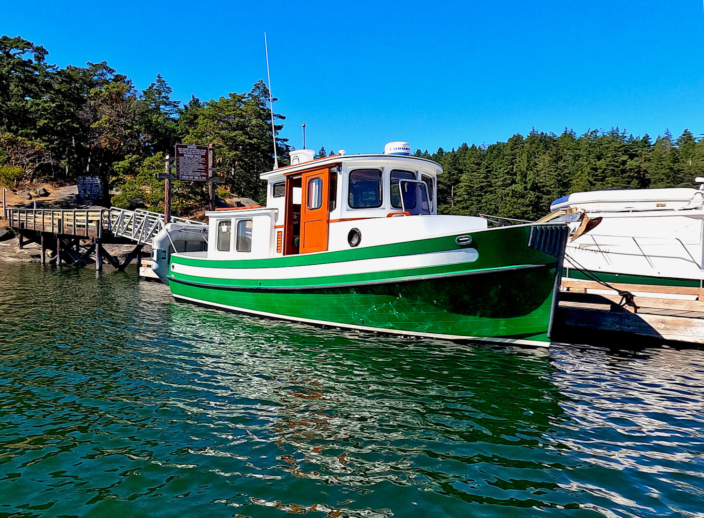

Nordic Tugs 26
1980–2026
The Nordic Tug 26 is the original compact Nordic Tugs cruiser, built around a pilothouse, semi-displacement fiberglass hull and single diesel shaft drive. Its narrow beam and one-cabin layout favor economical couple cruising, inland waterways and compact marina footprints rather than large-boat accommodation. Production was interrupted after 1997 and later revived in limited production, so displacement, engines and equipment vary materially by generation.

- Length
- 26.33 ft
- Beam
- 9.5 ft
- Draft
- 3.25 ft
- Hull behaviour
- Semi-Displacement
- Fuel
- Diesel
- Propulsion
- Shaft
- Engine configuration
- Single inboard diesel
- Boat family
- Tug
- Construction
- Fiberglass
Best for
- Couples prioritizing economy and pilothouse protection
- Canal, Great Loop and protected coastal cruising
- Owners wanting a compact single-diesel tug cruiser
Trade-offs
- Interior, cockpit and storage volume are limited
- Early and revived-production boats differ in weight, engines and equipment
- Trailerable dimensions do not make it a casual tow for every vehicle or jurisdiction
- Compact sleeping and head arrangements require personal fit testing
Known concerns
- No model-specific concern has been promoted to B-Scout’s evidence threshold. This does not mean the model has no age-, condition- or hull-specific risks.
Inspection focus
- Confirm model year, engine installation and any repower work
- Inspect pilothouse windows, cabin-top and deck penetrations for moisture intrusion
- Inspect fuel and water tanks, fill/vent hoses and access
- Inspect exhaust, cooling, shaft, rudder and steering systems
- Review electrical upgrades and owner modifications
Continue researching
Related boat models
32.08 ft · Semi-Displacement
34.92 ft · Semi-Displacement
39.83 ft · Semi-Displacement
40 ft · Semi-Displacement
26.25 ft · Displacement
26.42 ft · Planing
About this record
B-Scout preserves uncertainty: missing information remains unknown rather than being treated as a negative. Specifications and guidance describe the model record; individual boats can differ by year, equipment, refit and condition.